양혜준
Mobile Engineer — Flutter / Kotlin / Swift
Flutter · Kotlin · Swift를 넘나들며 크로스플랫폼과 네이티브 양쪽에서 실제 제품을 만드는 모바일 엔지니어입니다. 문제가 생기면 표면적인 원인에 머물지 않고 근본까지 파고드는 편이고, SDK 내부나 플랫폼 동작 방식도 직접 검증하며 해결책을 찾습니다. 새로운 기술을 빠르게 익혀 실제 서비스에 적용하는 것을 좋아하고, AI 코딩 도구를 적극 활용해 개발 생산성을 높이는 데도 익숙합니다.
Skills & Tools
LANGUAGE & FRAMEWORK
TOOLS
Work Experience
파수에이아이
2024.08 – 현재Fireside — 사내 협업 메신저
Flutterv2.1 – v2.6 진행중모바일 2인 개발- v2.1부터 개발 담당, Android · iOS 각각 출시 경험
- 문서관리 + 채팅 통합 B2B 협업 메신저 개발 담당
- Android · iOS 푸시 알림, AI 챗봇 기능, 보안 문서 연동 및 열람 지원 등 신규 기능 개발
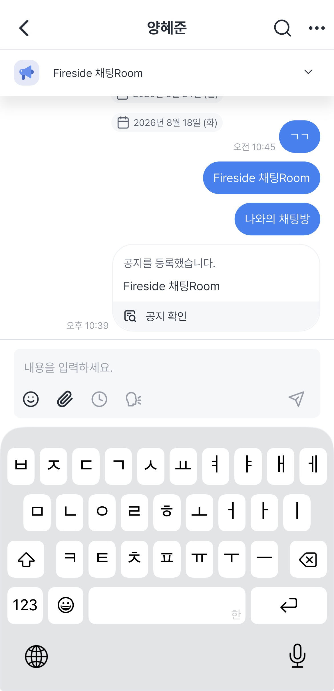
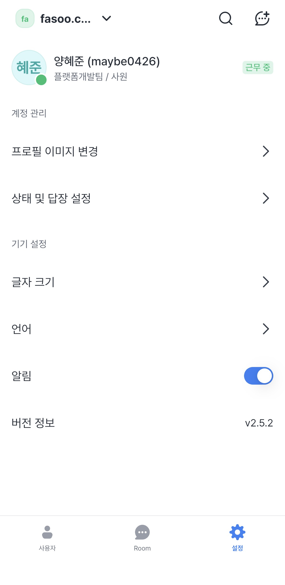
ImagePicker — 커스텀 이미지 선택 모듈
Kotlin- Fireside 채팅의 이미지 첨부 품질 문제를 해결하기 위해 이미지 피커를 네이티브(Kotlin)로 직접 개발
- 압축 과정에서 저하되던 화질을 개선하고, 자르기·회전 처리 시 발생하던 메모리 사용량을 최적화
FSS (Fasoo Smart Screen) — 화면 캡처 방지 · 워터마크 SDK
KotlinSwift- 화면 캡처 방지 기능과 워터마크 표시 기능으로 구성된 SDK 중, 워터마크 표시 기능의 Kotlin 전환을 담당 (기여도 50%)
- Flutter 기반 앱에서는 SDK 캡처 방지 처리가 동작하지 않던 문제를 근본 원인까지 분석해 해결 — 과정은 Case FSS-03 참고
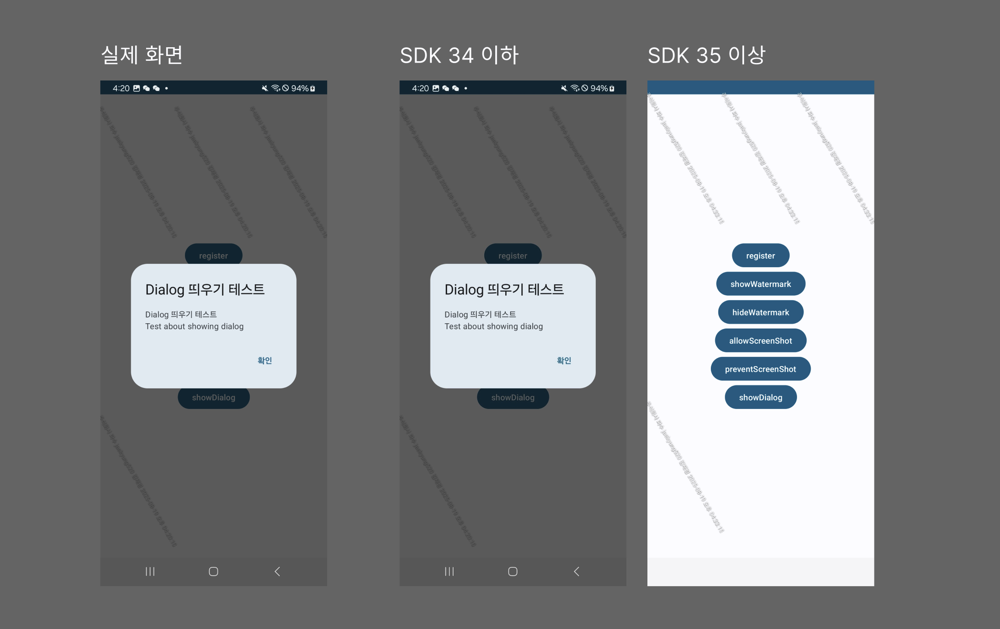
공통 화면 Template
5 ProductsFlutter- 로그인·온보딩·권한 안내·서버 등록·서버 목록·스플래시 등 5개 제품에서 반복 구현되던 화면들을 재사용 가능한 Flutter 패키지(
fasoo_design_system_templates)로 표준화 - Template은 UI 렌더링만 담당하고, API 호출·화면 전환·성공/실패 처리 등 비즈니스 로직은 전부 콜백으로 소비 앱에 위임 —
state/actions두 파라미터로 인터페이스를 단순화해 소비 앱의 구현 부담 최소화 - 반응형 breakpoint(768px)를
FdsLayout단일 소스로 관리, 여러 템플릿에 반복되던 반응형 애니메이션 로직은FdsResponsiveLayoutTransitionMixin으로 추출해 중복 제거 - 초기 UI 구현 시 Figma MCP를 활용해 Figma 수치·컴포넌트 매핑을 자동화, 반복 측정 작업 제거
기타
- iOS App Extension으로 사내 전화 수신 화면에 발신자 소속·직급 정보를 표시하는 기능 개발 (Spotlight Extension 활용), 통화 종료 후 로컬 알림 흐름 설계
- MVVM 기반 클린 아키텍처 스터디 리드, 코드 리뷰 진행
STACK · Flutter · Kotlin · Swift · iOS App Extension · MethodChannel · GitLab CI/CD · MVVM
Coxspace
2023.09 – 2023.12 인턴- BLE 기반 반지형 웨어러블 마우스 'Vanzy' 개발 참여 — 손가락 움직임으로 커서를 조작하고 특정 제스처로 앱 단축 기능을 실행하는 제품
- 전화 받기/거절, 최근 사용 앱 실행 등 신규 제스처 기능 3종 추가 및 관련 권한 처리 (Android 공식 문서 기반)
- 반지 펌웨어 업데이트(C) 진행 — BLE 프로토콜 송수신·파싱·패킷 구조 설계
STACK · Flutter(Dart) · Kotlin · C · BLE
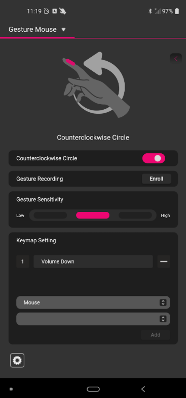
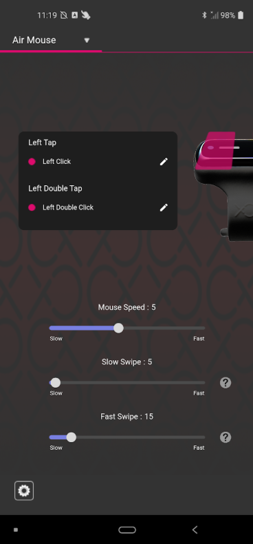
Technical Highlights — 문제 해결 사례
앱 배포 지연 문제 해결 — Shorebird 코드 푸시 도입
DEPLOY-01- 문제
- iOS 심사(평균 1주 이상) · Android 배포(2~3일)로 긴급 버그를 즉시 대응하기 어려웠음
- 해결
- Flutter용 실시간 코드 패치 도구 Shorebird 도입, Fastlane/CI 연동 및 Flavor별 릴리즈 체계 구축
- 결과
- 사내 서비스 Fireside에 실제 적용해 검증, 네이티브 코드·에셋 등 패치 불가 영역까지 명확히 구분해 팀 배포 정책 수립에 반영
패치 가능 / 불가 구분
단순 도입에 그치지 않고 패치 가능·불가 영역을 직접 검증해 분류했습니다. 이를 기반으로 긴급 버그는 Shorebird로 즉시 대응하고, Native 영역 변경이 포함된 수정은 기존 배포 프로세스를 유지하는 이중 배포 정책을 팀에 공유했습니다.
크로스플랫폼 크래시 모니터링 공백 해소 — Sentry 도입
MONITOR-02- 문제
- Firebase Crashlytics가 Windows를 지원하지 않아 크래시 추적 사각지대 발생. Windows에서 발생한 크래시는 재현조차 어려워 원인 파악에 오랜 시간이 소요됐음
- 해결
sentry_flutter를 도입해runZonedGuarded로 Flutter 전역 예외를 포착하고,PlatformDispatcher.onError로 비동기 예외까지 커버. Flutter · Android · iOS · Windows 레이어 전체를 단일 Sentry 프로젝트로 수집하도록 구성- 결과
- 이전에는 재현이 어려웠던 Windows 크래시를 스택트레이스로 즉시 원인 파악 가능해짐. Flutter + Native가 혼재된 구조에서도 하나의 대시보드에서 통합 관리
FSS — 공식 문서에 명확한 가이드가 없던 이슈를 근본 원인까지 파고들어 해결
FSS-03- 문제
- Kotlin/Swift로 개발한 화면 캡처 방지 SDK가 Flutter로 만들어진 화면에서는 정상 동작하지 않아, 캡처 시 보호 처리 없이 빈 화면만 나오는 문제 발생
- 해결
- PixelCopy, TextureView, MediaProjection 등 7가지 이상 방법을 직접 검증하며 View 계층을 끝까지 탐색,
FlutterSurfaceView가 원인임을 특정하고 렌더 타입별(TextureView/SurfaceView) 캡처·보호 로직을 분기 구현 - 결과
- 공식 문서에 명확한 가이드가 없던 이슈를 근본 원인까지 파고들어 해결, Flutter 기반 제품까지 SDK 지원 범위 확대
시도해본 방법
FlutterSurfaceView를 찾은 뒤, 실제 렌더 타입에 따라 서로 다른 캡처 방법을 분기 적용사내 다중 제품 공통 화면 Template 개발
UI-04- 문제
- Wrapsody, Wrapsody eCo, Fasoo View, Fasoo View+, Fireside 등 사내 모바일 제품 5종에서 유사한 화면을 제품마다 각각 새로 구현해 중복 개발 비용 발생
- 해결
- 제품 전반에 공통으로 쓰이는 화면들을 재사용 가능한 Template(공통 컴포넌트)로 분리해 표준화, 각 제품은 필요한 부분만 커스터마이징해 적용하도록 설계
- 결과
- 5개 제품에 적용해 제품별 반복 개발 공수 절감, 제품 간 UI 일관성 확보
그 외 — Google I/O 등 컨퍼런스 참여로 Jetpack Compose, Adaptive Design, Kotlin Multiplatform 등 최신 Android 트렌드 지속 학습
Projects
Motu — 국내/해외 주식 시세·거래 앱
2026.02 – 2026.06 기획·디자인·개발 1인 담당 실사용 중AI 코딩 도구를 얼마나 효율적으로 활용할 수 있는지 직접 검증하고 싶어 시작한 프로젝트입니다. Claude · Codex를 설계부터 구현까지 적극 활용해 기획·디자인·개발 전 과정을 혼자서 빠르게 완성도 높은 앱으로 만들었고, 단순 코드 생성을 넘어 AI와 함께 사고하고 출력을 검토·수정하며 실제 동작하는 서비스 수준으로 완성하는 협업 방식을 체득했습니다. 실제로 매일 사용하는 나만의 맞춤 주식투자 앱이며, 이후 AI Agent가 매매 판단을 돕는 기능을 추가 개발할 예정입니다.
AI TOOLS USED
- KIS OpenAPI 기반으로 국내/해외 주식 시세 조회 및 거래 기능을 제공하는 개인 프로젝트
- 소켓 기반 실시간 가격·체결량 반영, 홈 대시보드(자산 요약·뉴스·투자자 수급 정보), 카테고리별 랭킹, 즐겨찾기, 물타기 계산기, 다크모드 등 구현
- 종목별 실시간 시세를 여러 화면에서 동시에 구독해야 해, 동일 소켓 연결을 화면 간 공유하도록 앱 구조를 최적화해 다수 종목 실시간 처리의 안정성 확보
- KIS OpenAPI 인증 토큰 관리·요청 처리 방식을 공식 문서만으로 파악하기 어려운 부분까지 직접 검증하며 연동 이슈 해결
- Riverpod로 상태 관리, Flutter Secure Storage로 민감 정보 보호, Model/Repository/ViewModel/View 계층을 분리한 MVVM 구조로 설계
STACK · Flutter(Dart) · Riverpod · Flutter Secure Storage · KIS OpenAPI · MVVM
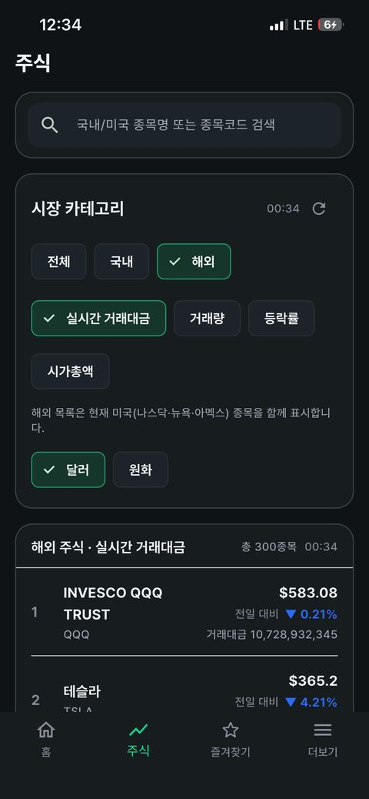
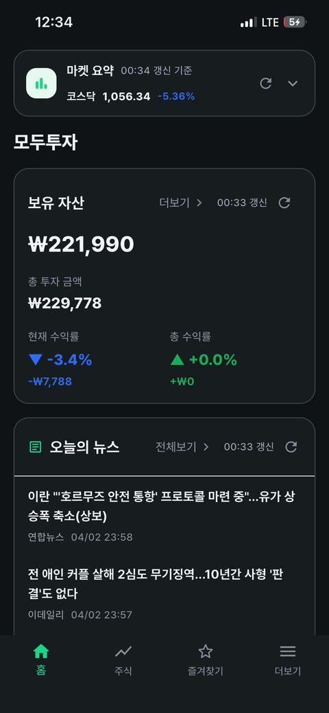
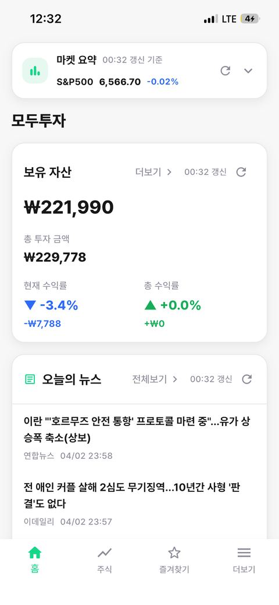
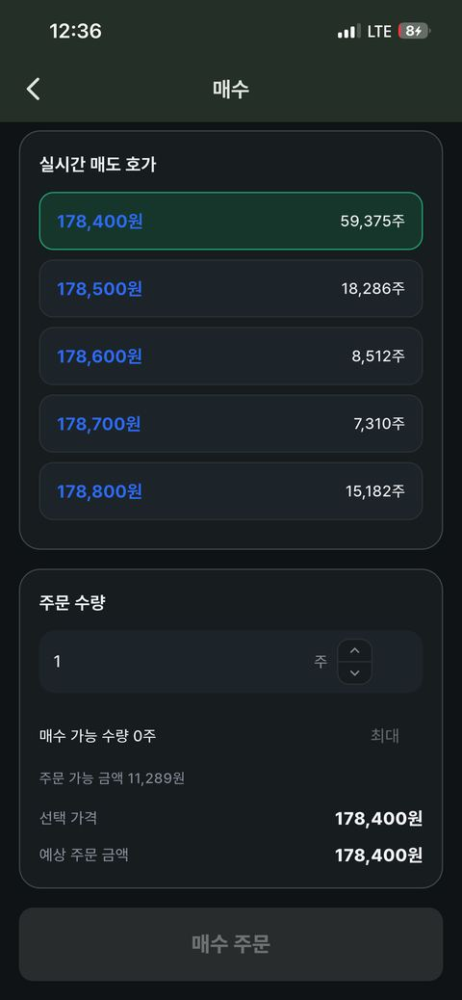
캡스톤 디자인 — 개인 전기차 충전기 공유 플랫폼
대학교 졸업작품 · 3인 팀 · 3개월- 대학교 재학 중 진행한 캡스톤 디자인(졸업작품) 프로젝트로, 3인 팀이 약 3개월간 개인 소유 전기차 충전기를 등록·공유할 수 있는 플랫폼을 기획부터 개발까지 진행
- 공용 충전소 / 개인 충전기 / 충전중 충전기를 지도에 색상별로 구분 표시, 차종별 예상 충전 시간 계산, 리뷰 기능 구현
- 예약 요청 시 충전소 주인에게 수락/거절 알림 발송, 결과를 구매자에게 재전달하는 양방향 알림 흐름 설계
STACK · Flutter(Dart) · Google Maps API · RESTful API · OOP
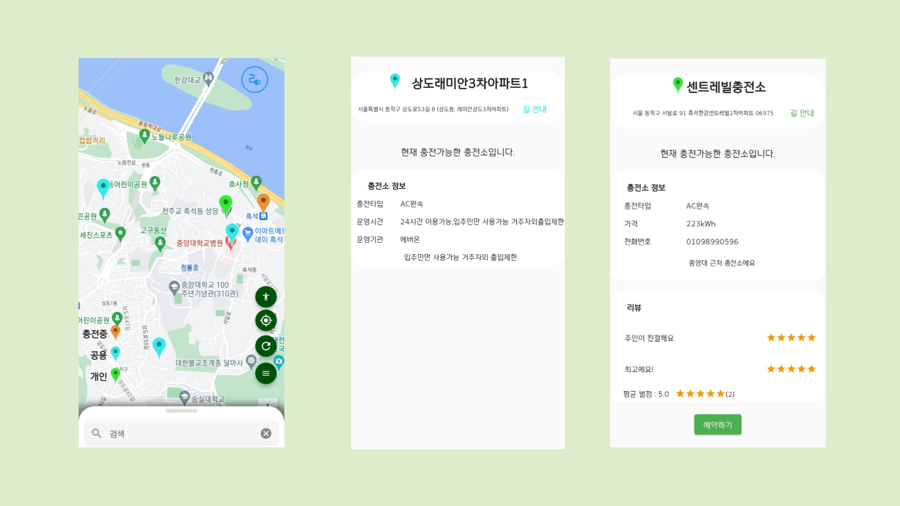
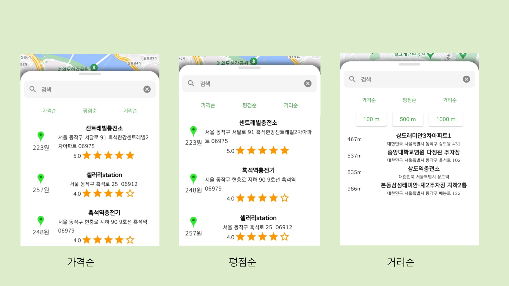
네이버 부스트캠프 — 챌린지 트레이닝
- 프로세스 메모리 구현, 화성 달력, 스택 구현 등 매일 새로운 알고리즘·설계 미션 수행
- 매주 동료와 협업 설계·구현 진행, 매일 피어리뷰로 코드를 설명·평가하며 커뮤니케이션 역량 강화
STACK · Github/Github Gist · Notion · Slack
Education
동아리 'DevLabs' 활동